- 00 开篇词 为什么每一位大前端从业者都应该学习Flutter？.md.html
- 01 预习篇 · 从0开始搭建Flutter工程环境.md.html
- 02 预习篇 · Dart语言概览.md.html
- 03 深入理解跨平台方案的历史发展逻辑.md.html
- 04 Flutter区别于其他方案的关键技术是什么？.md.html
- 05 从标准模板入手，体会Flutter代码是如何运行在原生系统上的.md.html
- 06 基础语法与类型变量：Dart是如何表示信息的？.md.html
- 07 函数、类与运算符：Dart是如何处理信息的？.md.html
- 08 综合案例：掌握Dart核心特性.md.html
- 09 Widget，构建Flutter界面的基石.md.html
- 10 Widget中的State到底是什么？.md.html
- 11 提到生命周期，我们是在说什么？.md.html
- 12 经典控件（一）：文本、图片和按钮在Flutter中怎么用？.md.html
- 13 经典控件（二）：UITableView_ListView在Flutter中是什么？.md.html
- 14 经典布局：如何定义子控件在父容器中排版的位置？.md.html
- 15 组合与自绘，我该选用何种方式自定义Widget？.md.html
- 16 从夜间模式说起，如何定制不同风格的App主题？.md.html
- 17 依赖管理（一）：图片、配置和字体在Flutter中怎么用？.md.html
- 18 依赖管理（二）：第三方组件库在Flutter中要如何管理？.md.html
- 19 用户交互事件该如何响应？.md.html
- 20 关于跨组件传递数据，你只需要记住这三招.md.html
- 21 路由与导航，Flutter是这样实现页面切换的.md.html
- 22 如何构造炫酷的动画效果？.md.html
- 23 单线程模型怎么保证UI运行流畅？.md.html
- 24 HTTP网络编程与JSON解析.md.html
- 25 本地存储与数据库的使用和优化.md.html
- 26 如何在Dart层兼容Android_iOS平台特定实现？（一）.md.html
- 27 如何在Dart层兼容Android_iOS平台特定实现？（二）.md.html
- 28 如何在原生应用中混编Flutter工程？.md.html
- 29 混合开发，该用何种方案管理导航栈？.md.html
- 30 为什么需要做状态管理，怎么做？.md.html
- 31 如何实现原生推送能力？.md.html
- 32 适配国际化，除了多语言我们还需要注意什么_.md.html
- 33 如何适配不同分辨率的手机屏幕？.md.html
- 34 如何理解Flutter的编译模式？.md.html
- 35 Hot Reload是怎么做到的？.md.html
- 36 如何通过工具链优化开发调试效率？.md.html
- 37 如何检测并优化Flutter App的整体性能表现？.md.html
- 38 如何通过自动化测试提高交付质量？.md.html
- 39 线上出现问题，该如何做好异常捕获与信息采集？.md.html
- 40 衡量Flutter App线上质量，我们需要关注这三个指标.md.html
- 41 组件化和平台化，该如何组织合理稳定的Flutter工程结构？.md.html
- 42 如何构建高效的Flutter App打包发布环境？.md.html
- 43 如何构建自己的Flutter混合开发框架（一）？.md.html
- 44 如何构建自己的Flutter混合开发框架（二）？.md.html
- 特别放送 温故而知新，与你说说专栏的那些思考题.md.html
- 结束语 勿畏难，勿轻略.md.html
- 捐赠
36 如何通过工具链优化开发调试效率？
你好，我是陈航。今天我们来聊聊如何调试Flutter App。
软件开发通常是一个不断迭代、螺旋式上升的过程。在迭代的过程中，我们不可避免地会经常与Bug打交道，特别是在多人协作的项目中，我们不仅要修复自己的Bug，有时还需要帮别人解决Bug。
而修复Bug的过程，不仅能帮我们排除代码中的隐患，也能帮助我们更快地上手项目。因此，掌握好调试这门技能，就显得尤为重要了。
在Flutter中，调试代码主要分为输出日志、断点调试和布局调试3类。所以，在今天这篇文章中，我将会围绕这3个主题为你详细介绍Flutter应用的代码调试。
我们先来看看，如何通过输出日志调试应用代码吧。
输出日志
为了便于跟踪和记录应用的运行情况，我们在开发时通常会在一些关键步骤输出日志（Log），即使用print函数在控制台打印出相关的上下文信息。通过这些信息，我们可以定位代码中可能出现的问题。
在前面的很多篇文章里，我们都大量使用了print函数来输出应用执行过程中的信息。不过，由于涉及I/O操作，使用print来打印信息会消耗较多的系统资源。同时，这些输出数据很可能会暴露App的执行细节，所以我们需要在发布正式版时屏蔽掉这些输出。
说到操作方法，你想到的可能是在发布版本前先注释掉所有的print语句，等以后需要调试时，再取消这些注释。但，这种方法无疑是非常无聊且耗时的。那么，Flutter给我们提供了什么更好的方式吗？
为了根据不同的运行环境来开启日志调试功能，我们可以使用Flutter提供的debugPrint来代替print。debugPrint函数同样会将消息打印至控制台，但与print不同的是，它提供了定制打印的能力。也就是说，我们可以向debugPrint函数，赋值一个函数声明来自定义打印行为。
比如在下面的代码中，我们将debugPrint函数定义为一个空函数体，这样就可以实现一键取消打印的功能了：
debugPrint = (String message, {int wrapWidth}) {};//空实现
在Flutter 中，我们可以使用不同的main文件来表示不同环境下的入口。比如，在第34篇文章“如何理解Flutter的编译模式？”中，我们就分别用main.dart与main-dev.dart实现了生产环境与开发环境的分离。同样，我们可以通过main.dart与main-dev.dart，去分别定义生产环境与开发环境不同的打印日志行为。
在下面的例子中，我们将生产环境的debugPrint定义为空实现，将开发环境的debugPrint定义为同步打印数据：
//main.dart
void main() {
// 将debugPrint指定为空的执行体, 所以它什么也不做
debugPrint = (String message, {int wrapWidth}) {};
runApp(MyApp());
}
//main-dev.dart
void main() async {
// 将debugPrint指定为同步打印数据
debugPrint = (String message, {int wrapWidth}) => debugPrintSynchronously(message, wrapWidth: wrapWidth);
runApp(MyApp());
}
可以看到，在代码实现上，我们只要将应用内所有的print都替换成debugPrint，就可以满足开发环境下打日志的需求，也可以保证生产环境下应用的执行信息不会被意外打印。
断点调试
输出日志固然方便，但如果要想获取更为详细，或是粒度更细的上下文信息，静态调试的方式非常不方便。这时，我们需要更为灵活的动态调试方法，即断点调试。断点调试可以让代码在目标语句上暂停，让程序逐条执行后续的代码语句，来帮助我们实时关注代码执行上下文中所有变量值的详细变化过程。
Android Studio提供了断点调试的功能，调试Flutter应用与调试原生Android代码的方法完全一样，具体可以分为三步，即标记断点、调试应用、查看信息。
接下来，我们以Flutter默认的计数器应用模板为例，观察代码中_counter值的变化，体会断点调试的全过程。
首先是标记断点。既然我们要观察_counter值的变化，因此在界面上展示最新的_counter值时添加断点，去观察其数值变化是最理想的。因此，我们在行号右侧点击鼠标，可以把断点加载到初始化Text控件所示的位置。
在下图的例子中，我们为了观察_counter在等于20的时候是否正常，还特意设置了一个条件断点_counter==20，这样调试器就只会在第20次点击计数器按钮时暂停下来：
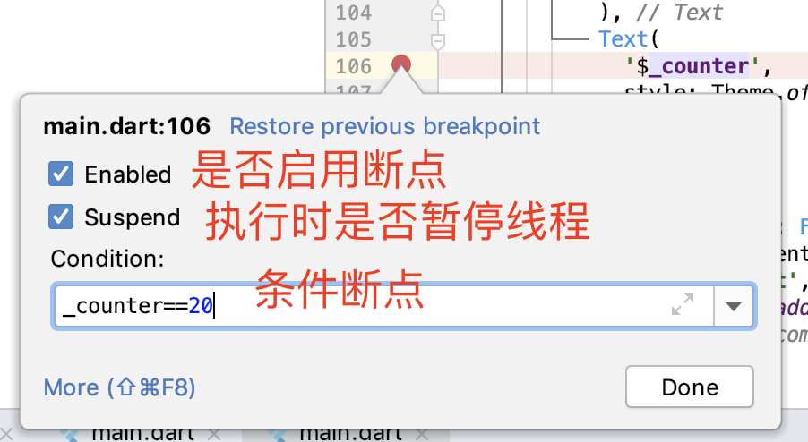
图1 标记断点
添加断点后，对应的行号将会出现圆形的断点标记，并高亮显示整行代码。到此，断点就添加好了。当然，我们还可以同时添加多个断点，以便更好地观察代码的执行过程。
接下来则是调试应用了。和之前通过点击run按钮的运行方式不同，这一次我们需要点击工具栏上的虫子图标，以调试模式启动App，如下图所示：
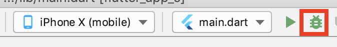
图2 调试App
等调试器初始化好后，我们的程序就启动了。由于我们的断点设置在了_counter为20时，因此在第20次点击了“+”按钮后，代码运行到了断点位置，自动进入了Debug视图模式。
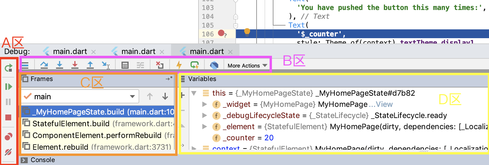
图3 Debug视图模式
如图所示，我把Debug视图模式划分为4个区域，即A区控制调试工具、B区步进调试工具、C区帧调试窗口、D区变量查看窗口。
A区的按钮，主要用来控制调试的执行情况：
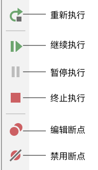
图4 A区按钮
- 比如，我们可以点击继续执行按钮来让程序继续运行、点击终止执行按钮来让程序终止运行、点击重新执行按钮来让程序重新启动，或是在程序正常执行时，点击暂停执行按钮按钮来让程序暂停运行。
- 又比如，我们可以点击编辑断点按钮来编辑断点信息，或是点击禁用断点按钮来取消断点。
B区的按钮，主要用来控制断点的步进情况：
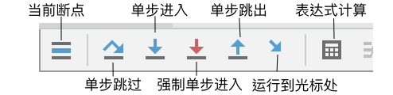
图5 B区按钮
- 比如，我们可以点击单步跳过按钮来让程序单步执行（但不会进入方法体内部）、点击单步进入或强制单步进入按钮让程序逐条语句执行，甚至还可以点击运行到光标处按钮让程序执行到在光标处（相当于新建临时断点）。
- 比如，当我们认为断点所在的方法体已经无需执行时，则可以点击单步跳出按钮让程序立刻执行完当前进入的方法，从而返回方法调用处的下一行。
- 又比如，我们可以点击表达式计算按钮来通过赋值或表达式方式修改任意变量的值。如下图所示，我们通过输入表达式_counter+=100，将计数器更新为120：
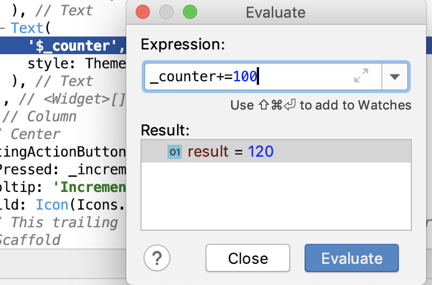
图6 Evaluate计算表达式
C区用来指示当前断点所包含的函数执行堆栈，D区则是其堆栈中的函数帧所对应的变量。
在这个例子中，我们的断点是在_MyHomePageState类中的build方法设置的，因此D区显示的也是build方法上下文所包含的变量信息（比如_counter、_widget、this、_element等）。如果我们想切换到_MyHomePageState的build方法执行堆栈中的其他函数（比如StatefulElement.build），查看相关上下文的变量信息时，只需要在C区中点击对应的方法名即可。
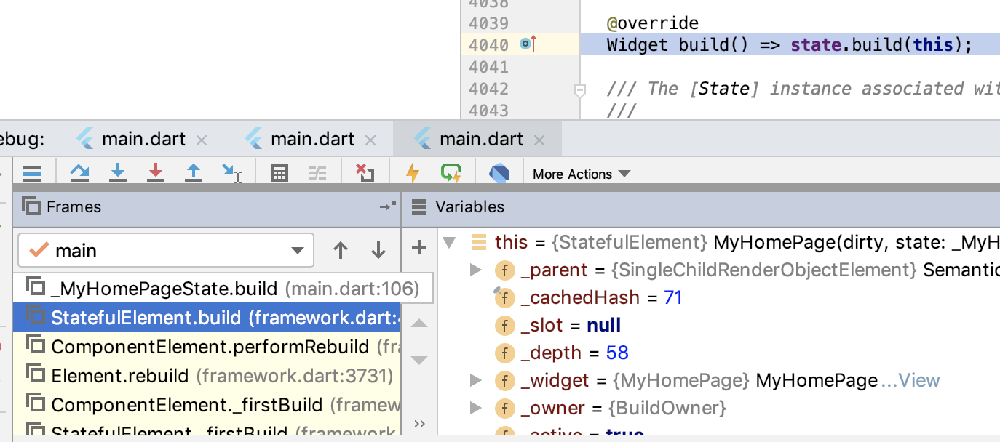
图7 切换函数执行堆栈
可以看到，Android Studio提供的Flutter调试能力很丰富，我们可以通过这些基本步骤的组合，更为灵活地调整追踪步长，观察程序的执行情况，揪出代码中的Bug。
布局调试
通过断点调试，我们在Android Studio的调试面板中，可以随时查看执行上下文有关的变量的值，根据逻辑来做进一步的判断，确定跟踪执行的步骤。不过在更多时候，我们使用Flutter的目的是实现视觉功能，而视觉功能的调试是无法简单地通过Debug视图模式面板来搞定的。
在上一篇文章中，我们通过Flutter提供的热重载机制，已经极大地缩短了从代码编写到界面运行所耗费的时间，可以更快地发现代码与目标界面的明显问题，但如果想要更快地发现界面中更为细小的问题，比如对齐、边距等，则需要使用Debug Painting这个界面调试工具。
Debug Painting能够以辅助线的方式，清晰展示每个控件元素的布局边界，因此我们可以根据辅助线快速找出布局出问题的地方。而Debug Painting的开启也比较简单，只需要将debugPaintSizeEnabled变量置为true即可。如下所示，我们在main函数中，开启了Debug Painting调试开关：
import 'package:flutter/rendering.dart';
void main() {
debugPaintSizeEnabled = true; //打开Debug Painting调试开关
runApp(new MyApp());
}
运行代码后，App在iPhone X中的执行效果如下：
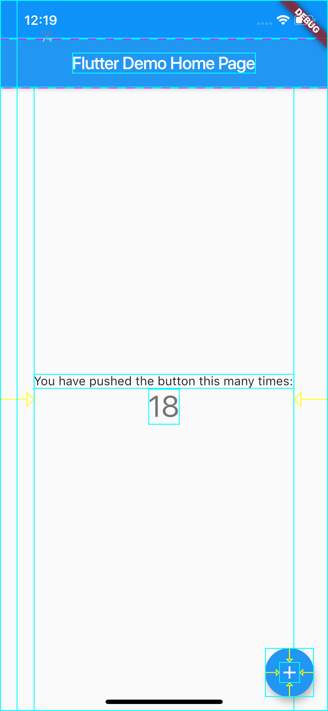
图8 Debug Painting运行效果
可以看到，计数器示例中的每个控件元素都已经被标尺辅助线包围了。
辅助线提供了基本的Widget可视化能力。通过辅助线，我们能够感知界面中是否存在对齐或边距的问题，但却没有办法获取到布局信息，比如Widget距离父视图的边距信息、Widget宽高尺寸信息等。
如果我们想要获取到Widget的可视化信息（比如布局信息、渲染信息等）去解决渲染问题，就需要使用更强大的Flutter Inspector了。Flutter Inspector对控件布局详细数据提供了一种强大的可视化手段，来帮助我们诊断布局问题。
为了使用Flutter Inspector，我们需要回到Android Studio，通过工具栏上的“Open DevTools”按钮启动Flutter Inspector：
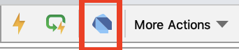
图9 Flutter Inspector启动按钮
随后，Android Studio会打开浏览器，将计数器示例中的Widget树结构展示在面板中。可以看到，Flutter Inspector所展示的Widget树结构，与代码中实现的Widget层次是一一对应的。
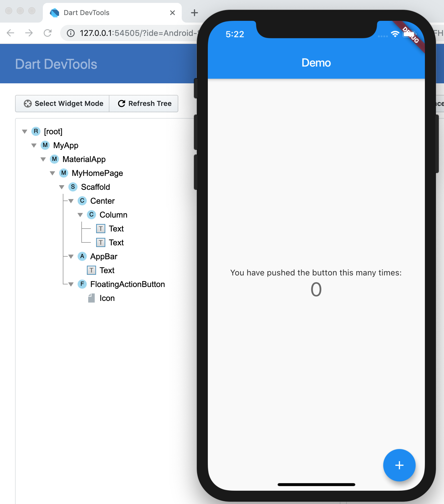
图10 Flutter Inspector示意图
我们的App运行在iPhone X之上，其分辨率为375*812。接下来，我们以Column组件的布局信息为例，通过确认其水平方向为居中布局、垂直方向为充满父Widget剩余空间的过程，来说明Flutter Inspector的具体用法。
为了确认Column在垂直方向是充满其父Widget剩余空间的，我们首先需要确定其父Widget在垂直方向上的另一个子Widget，即AppBar的信息。我们点击Flutter Inspector面板左侧中的AppBar控件，右侧对应显示了它的具体视觉信息。
可以看到AppBar控件距离左边距为0，上边距也为0；宽为375，高为100：
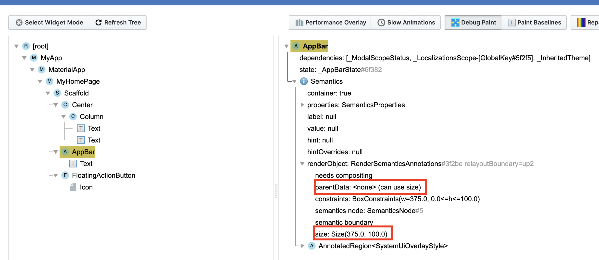
图11 Flutter Inspector之AppBar
然后，我们将Flutter Inspector面板左侧选择的控件更新为Column，右侧也更新了它的具体视觉信息，比如排版方向、对齐模式、渲染信息，以及它的两个子Widget-Text。
可以看到，Column控件的距离左边距为38.5，上边距为0；宽为298，高为712：
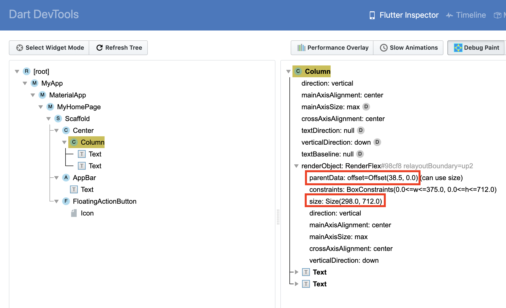
图12 Flutter Inspector之Columnn
通过上面的数据我们可以得出：
- Column的右边距=父Widget宽度（即iPhone X宽度375）-Column左边距（即38.5）- Column宽（即298）=38.5，即左右边距相等，因此Column是水平方向居中的；
- Column的高度=父Widget的高度（即iPhone X高度812）- AppBar上边距（即0）- AppBar高度（即100） - Column上边距（即0）= 712.0，即Column在垂直方向上完全填满了父Widget除去AppBar之后的剩余空间。
因此，Column的布局行为是完全符合预期的。
总结
好了，今天的分享就到这里，我们总结一下今天的主要内容吧。
首先，我带你学习了如何实现定制日志的输出能力。Flutter提供了debugPrint函数，这是一个可以被覆盖的打印函数。我们可以分别定义生产环境与开发环境的日志输出行为，来满足开发期打日志需求的同时，保证发布期日志执行信息不会被意外打印。
然后，我与你介绍了Android Studio提供的Flutter调试功能，并通过观察计数器工程的计数器变量为例，与你讲述了具体的调试方法。
最后，我们一起学习了Flutter的布局调试能力，即通过Debug Paiting来定义辅助线，以及通过Flutter Inspector这种可视化手段来更为准确地诊断布局问题。
写代码不可避免会出现Bug，出现时就需要Debug（调试）。调试代码本质上就是一个不断收敛问题发生范围的过程，因此排查问题的一个最基本思路，就是二分法。
所谓二分调试法，是指通过某种稳定复现的特征（比如Crash、某个变量的值、是否出现某个现象等任何明显的迹象），加上一个能把问题出现的范围划分为两半的手段（比如断点、assert、日志等），两者结合反复迭代不断将问题可能出现的范围一分为二（比如能判断出引发问题的代码出现在断点之前等）。通过二分法，我们可以快速缩小问题范围，这样一来调试的效率也就上去了。
思考题
最后，我给你留下一道思考题吧。
请将debugPrint在生产环境下的打印日志行为更改为写日志文件。其中，日志文件一共5个（0-4），每个日志文件不能超过2MB，但可以循环写。如果日志文件已满，则循环至下一个日志文件，清空后重新写入。
欢迎你在评论区给我留言分享你的观点，我会在下一篇文章中等待你！感谢你的收听，也欢迎你把这篇文章分享给更多的朋友一起阅读。
© 2019 - 2023 Liangliang Lee. Powered by gin and hexo-theme-book.